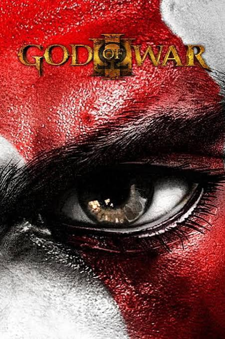

God of War III
Sinopse
O capítulo final da trilogia começa exatamente onde o segundo jogo parou: Kratos, montado no Titã Gaia, escala o Monte Olimpo para finalmente confrontar Zeus. Ao longo da jornada, ele enfrenta e mata praticamente todos os deuses do panteão grego, incluindo Poseidon, Hades, Hélios, Hera e Hefesto, em uma escalada de violência e vingança que culmina no confronto final contra Zeus.
Conclusão
Lançado em 2010 exclusivamente para PlayStation 3, God of War III elevou o padrão gráfico e técnico da série, com cenários grandiosos e batalhas ainda mais cinematográficas. O jogo encerra o arco de vingança de Kratos contra os deuses, deixando um final ambíguo e reflexivo sobre esperança, destruição e redenção — um encerramento perfeito para a trilogia clássica.
God of War III

2010
Escalando o Monte Olimpo montado no Titã Gaia, Kratos inicia sua ofensiva final contra Zeus. Nada nem ninguém escapa de sua fúria: Poseidon, Hades, Hélios, Hera e Hefesto caem um a um enquanto ele avança rumo ao confronto derradeiro, que encerraria de vez seu ciclo de vingança contra os deuses do Olimpo.
Armas e Itens Mágicos
| Arma / Item | Tipo | Descrição |
|---|---|---|
| Lâminas do Caos | Arma principal | Kratos segue usando suas correntes lendárias, agora com efeitos visuais e combos ainda mais brutais. |
| Punhos de Hades | Arma secundária | Luvas flamejantes retiradas do próprio Hades, ideais para golpes pesados e combos de fogo. |
| Lança de Destino | Arma secundária | Arma perfurante rápida, eficiente contra inimigos blindados e à distância. |
| Cabeça da Górgona | Magia | Versão aprimorada do antigo poder de Medusa, permitindo petrificar múltiplos inimigos. |
| Fúria de Zeus | Magia | Ataque elétrico devastador, agora mais forte e com maior alcance do que nos jogos anteriores. |
| Ira de Hades | Magia | Invoca almas das trevas para atacar inimigos ao redor de Kratos em área. |
| Arco de Apolo | Item à distância | Arma retirada de Hélios, usada para atacar inimigos e ativar mecanismos à distância. |